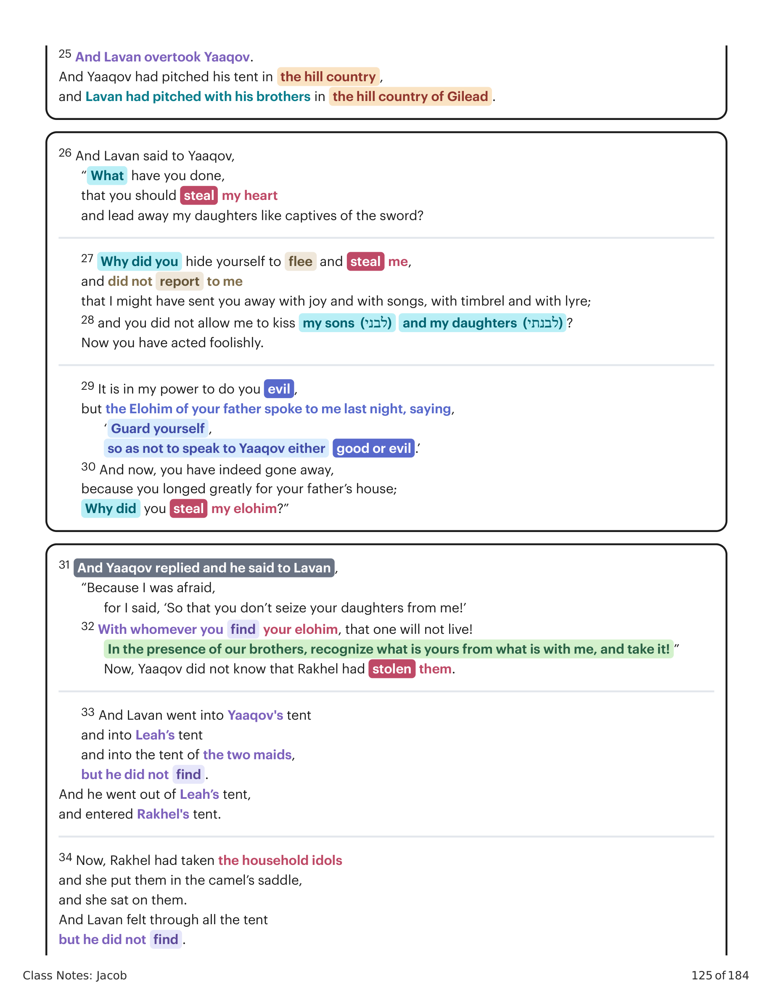

17 E levantou-se Yaaqov, e pôs seus filhos e suas mulheres sobre camelos; 18 e levou todo o seu gado, e todos os seus bens que havia adquirido, o gado adquirido que havia ajuntado em Padã-Arã, para ir a Yitskhaq seu pai, à terra de Canaã. 19 Ora, Lavan tinha ido tosquiar as suas ovelhas; e Rakhel furtou os ídolos domésticos de seu pai. 20 E Yaaqov furtou o coração de Lavan, o arameu, não lhe comunicando que fugia. 21 E fugiu, ele e tudo o que era seu, e levantou-se e passou o rio, e pôs o seu rosto para a montanha de Gileade. 22 E foi dito a Lavan ao terceiro dia que Yaaqov tinha fugido. 23 E tomou a seus irmãos com ele, e perseguiu-o pelo caminho de sete dias, e alcançou-o na montanha de Gileade. 24 E Deus veio a Lavan, o arameu, em sonho de noite, e disse-lhe: "Guarda-te, para que não fales a Yaaqov nem bem nem mal." 25 E Lavan alcançou a Yaaqov; e Yaaqov tinha armado a sua tenda na montanha; e Lavan armou com seus irmãos na montanha de Gileade. 26 E Lavan disse a Yaaqov: "Que fizeste, que furtaste o meu coração e levaste as minhas filhas como cativas de espada? 27 Por que te escondeste para fugir e me furtaste, e não me avisaste, para que eu te despedira com alegria e com cânticos, com tamboril e com harpa; 28 e não me permitiste beijar a meus filhos e a minhas filhas? Agora agiste loucamente. 29 Está no meu poder fazer-vos mal, porém o Elohim de teu pai me falou ontem à noite, dizendo: 'Guarda-te, para que não fales a Yaaqov nem bem nem mal.' 30 E agora, tendo tu ido porque muito anelavas a casa de teu pai, por que furtaste os meus elohim?" 31 E respondeu Yaaqov e disse a Lavan: "Porque tive medo, pois dizia: 'Para que não me roubasses as tuas filhas!' 32 Aquele com quem achares os teus elohim não viverá! Na presença de nossos irmãos, reconhece o que é teu e está comigo, e toma-o!" Ora, Yaaqov não sabia que Rakhel os havia furtado. 33 E entrou Lavan na tenda de Yaaqov, e na tenda de Leah, e na tenda das duas servas, mas não achou. E saiu da tenda de Leah, e entrou na tenda de Rakhel. 34 Ora, Rakhel tinha tomado os ídolos domésticos e os tinha posto na sela do camelo, e se assentou sobre eles; e apalpou Lavan toda a tenda, mas não os achou.17 And Yaaqov arose and put his children and his wives upon camels; 18 and he led away all his livestock and all his property, which he had gathered, his acquired livestock, which he had gathered in Paddan-aram, to go to Yitskhaq his father, to the land of Canaan. 19 Now, Lavan had gone to shear his flock, and Rakhel stole the household idols that were her father's. 20 And Yaaqov stole the heart of Lavan the Aramean by not reporting to him that he was fleeing. 21 And he fled, he and everything that belonged to him, and he arose and crossed the river, and he set his face toward the hill country of Gilead. 22 And it was reported to Lavan on the third day that Yaaqov had fled. 23 And he took his brothers with him and chased after him seven days' journey, and he clung to him in the hill country of Gilead. 24 And God came to Lavan the Aramean in a dream of the night and said to him, "Guard yourself, so that you don't speak to Yaaqov either good or evil." 25 And Lavan overtook Yaaqov. And Yaaqov had pitched his tent in the hill country, and Lavan had pitched with his brothers in the hill country of Gilead. 26 And Lavan said to Yaaqov, "What have you done, that you should steal my heart and lead away my daughters like captives of the sword? 27 Why did you hide yourself to flee and steal me, and did not report to me that I might have sent you away with joy and with songs, with timbrel and with lyre; 28 and you did not allow me to kiss my sons and my daughters? Now you have acted foolishly. 29 It is in my power to do you evil, but the Elohim of your father spoke to me last night, saying, 'Guard yourself, so as not to speak to Yaaqov either good or evil.' 30 And now, you have indeed gone away, because you longed greatly for your father's house; Why did you steal my elohim?" 31 And Yaaqov replied and he said to Lavan, "Because I was afraid, for I said, 'So that you don't seize your daughters from me!' 32 With whomever you find your elohim, that one will not live! In the presence of our brothers, recognize what is yours from what is with me, and take it!" Now, Yaaqov did not know that Rakhel had stolen them. 33 And Lavan went into Yaaqov's tent and into Leah's tent and into the tent of the two maids, but he did not find. And he went out of Leah's tent, and entered Rakhel's tent. 34 Now, Rakhel had taken the household idols and she put them in the camel's saddle, and she sat on them. And Lavan felt through all the tent but he did not find.
| Lavan Chases and Overtakes Yaaqov | |
|---|---|
| 18 and he led away all his livestock and all his property, which he had gathered, to go to Yitskhaq his father, to the land of Canaan. | 17 And Yaaqov arose and put his children and his wives upon camels; his acquired livestock, which he had gathered in Paddan-aram, and Rakhel stole the household idols that were her father’s. |
| 19 Now, Lavan had gone to shear his flock, by not reporting to him that he was fleeing . | 20 And Yaaqov stole the heart of Lavan (לב לבן) the Aramean |
| and he arose and crossed the river, | 21 And he fled , he and everything that belonged to him, and he set his face toward the hill country of Gilead . |
| 23 and he took his brothers with him and chased after him seven days’ journey, | 22 And it was reported to Lavan on the third day that Yaaqov had fled , and he clung to (וידבק) him in the hill country of Gilead . |
| “ Guard yourself , | 24 And God came to Lavan the Aramean in a dream of the night and said to him, so that you don’t speak to Yaaqov either good or evil .” |
Gênesis 31:17-42. Tradução e Design Literário por Tim Mackie para BibleProject Classroom: Jacó (2021).Genesis 31:17-42. Translation and Literary Design by Tim Mackie for BibleProject Classroom: Jacob (2021).

Gênesis 31:17-42. Tradução e Design Literário por Tim Mackie para BibleProject Classroom: Jacó (2021).Genesis 31:17-42. Translation and Literary Design by Tim Mackie for BibleProject Classroom: Jacob (2021).
35 E ela disse a seu pai: "Não se acenda a ira de meu senhor, porque não posso levantar-me diante de ti, pois o costume das mulheres está sobre mim." E ele apalpou, mas não achou os ídolos domésticos. 36 E irou-se Yaaqov, e contendeu com Lavan; e respondeu Yaaqov e disse a Lavan: "Qual é a minha transgressão? Qual é o meu pecado, que tão furiosamente me perseguiste? 37 Visto que apalpaste todos os meus bens, que achaste de todos os bens de tua casa? Põe-no aqui diante de meus irmãos e teus irmãos, e ajam eles como mediadores entre nós dois. 38 Estes vinte anos estive contigo; tuas ovelhas e tuas cabras não abortaram, nem comi os carneiros de teus rebanhos. 39 O que foi dilacerado por feras, não taquimei a ti; eu levava a perda; tu requerias o que me era furtado, quer de dia quer de noite. 40 Estava eu consumido pelo calor de dia e pelo frio de noite, e o sono fugia dos meus olhos. 41 Estes vinte anos tenho estado em tua casa; servi-te catorze anos por duas filhas e seis anos por teu rebanho, e mudaste o meu salário dez vezes. 42 Se o Deus de meu pai, o Deus de Abraão e o temor de Isaque não estivesse comigo, certamente me enviarias agora vazio. Deus tem visto a minha aflição e o trabalho das minhas mãos, e repreendeu-te ontem à noite."35 And she said to her father, "Don't let there be hot-anger in the eyes of my master, because I'm not able to rise before you, for the way of women is upon me." And he searched, but he did not find the household idols. 36 And there was hot-anger to Yaaqov, and he entered into a contention with Lavan; and Yaaqov replied and he said to Lavan, "What is my transgression?! What is my sin that you have hotly pursued me? 37 Though you have felt through all my goods, what have you found of all the goods of your house? Place it here in front of my brothers and your brothers, that they may act as the mediator between us two. 38 These twenty years I was with you; your ewe-lambs and your female goats have not miscarried, nor have I eaten the rams of your flocks. 39 That which was torn of beasts, I did not bring to you; I bore the loss of it myself. You required it of my hand, stolen by day or stolen by night. 40 During the day I was eaten by the heat, and by the frost at night, and my sleep fled from my eyes. 41 These twenty years I have been in your house; I served you four-ten years for your two daughters, and six years for your flock, and you changed my wages ten times. 42 If the God of my father, the God of Abraham, and the fear of Isaac, had not been for me, surely now you would have sent me away empty-handed. God has seen my affliction and the toil of my hands, and he acted as a mediator last night."
Nesta seção, Yaaqov é confrontado por Lavan de um modo que recorda as histórias anteriores sobre o engano de Abraão e Yitskhaq a Abimeleque.In this section, Yaaqov is confronted by Lavan in a way that recalls the earlier stories about Abraham and Yitskhaq's deception of Abimelech.
| Yaaqov's Ancestral Deception Exposed | |
|---|---|
| 35 And she said to her father, because I’m not able to rise before you, for the way of women is upon me.” | “Don’t let there be hot-anger in the eyes of my master, |
| And he searched, but he did not find the household idols. | What is my sin that you have hotly pursued me? |
| 36 And there was hot-anger to Yaaqov, and he entered into a contention with Lavan; and Yaaqov replied and he said to Lavan , | what have you found of all the goods of your house? |
| “What is my transgression?! | Place it here in front of my brothers and your brothers, that they may act as the mediator between us two. |
| 37 Though you have felt through all my goods, | your ewe-lambs (רחל) and your female goats have not miscarried, nor have I eaten the rams (אילי) of your flocks. |
| 38 These twenty years I was with you ; | 39 That which was torn of beasts, I did not bring to you; |
| I bore the loss of it myself. | I served you four-ten years for your two daughters, |
| You required it of my hand, stolen by day or stolen by night . | 42 If the God of my father, the God of Abraham, and the fear of Isaac, had not been for me , surely now you would have sent me away empty-handed. |
| 40 During the day I was eaten by the heat, and by the frost at night, and my sleep fled from my eyes. | God has seen my affliction and the toil of my hands, |
| 41 These twenty years I have been in your house ; and six years for your flock, and you changed my wages ten times. | |
| and he acted as a mediator last night.” |
O Engano Ancestral de Yaaqov Exposto. Criado por Tim Mackie para BibleProject Classroom: Jacó (2021).Yaaqov's Ancestral Deception Exposed. Created by Tim Mackie for BibleProject Classroom: Jacob (2021).
O Engano Geracional de Yaaqov. Criado por Tim Mackie para BibleProject Classroom: Jacó (2021).Yaaqov's Generational Deception. Created by Tim Mackie for BibleProject Classroom: Jacob (2021).
Estas comparações intencionais confirmam que a estratégia de Yaaqov com os rebanhos de Lavan foi uma manipulação inspirada pelo medo, e assim foi sua fuga secreta da casa de Lavan. O medo de Yaaqov de Lavan é posto em analogia com o medo de Abraão e Yitskhaq dos filisteus, e seu medo representa uma falta de confiança na promessa de Yahweh de que "Serei contigo".These intentional comparisons confirm that Yaaqov's strategy with Lavan's flocks was a fear-inspired manipulation, and so was his secretive flight from Lavan's house. Yaaqov's fear of Lavan is set on analogy with Abraham and Yitskhaq's fear of the Philistines, and his fear represents a lack of trust in Yahweh's promise that "I will be with you."
Observe como os "furtos" de Yaaqov e Rakhel são postos em estreita analogia entre si em Gênesis 31:19-30. Esta analogia apertada nos convida a ponderar todas as maneiras pelas quais Yaaqov tem "furtado" de Lavan (através da manipulação dos rebanhos, e agora fugindo em segredo). Mas recorde que o furto enganoso dos rebanhos de Lavan por Yaaqov, e agora de suas filhas, é uma continuação dos modos pelos quais Yaaqov também enganara seu próprio pai e irmão com comida e disfarces, todos visando adquirir a bênção da abundância do Éden. A analogia é trazida ainda mais perto na cena curiosa onde Lavan procura e "apalpa" por seus deuses de ídolos na tenda. Toda esta cena é uma reconstituição do engano de Yaaqov a seu pai.Notice how Yaaqov and Rakhel's "thefts" are set on close analogy to each other in Genesis 31:19-30. This tight analogy invites us to ponder all the ways that Yaaqov has "stolen" from Lavan (through manipulation of the flocks, and now by fleeing in secret). But recall that Yaaqov's deceptive theft of Lavan's flocks, and now of his daughters, is a continuation of the ways that Yaaqov had also deceived his own father and brother with food and disguises, all aimed at acquiring the blessing of Eden abundance. The analogy is brought even closer in the curious scene where Lavan searches and "feels" for his idol gods in the tent. This entire scene is a replay of Yaaqov's deception of his father.
O Engano de Yaaqov e o Furto de Rakhel. Criado por Tim Mackie para BibleProject Classroom: Jacó (2021).Yaaqov's Deception and Rakhel's Theft. Created by Tim Mackie for BibleProject Classroom: Jacob (2021).
A rede de analogias ilumina mutuamente os motivos dos personagens em cada caso. Yaaqov "furtou" a bênção de Esaú/Yitskhaq para ganhar a abundância do Éden. Yaaqov "furtou" os rebanhos de Lavan para ganhar abundância para si e sua família. Rakhel "furtou" os deuses de ídolos de Lavan para ganhar... o quê? É certamente intencional que não nos seja dito sobre os motivos de Rakhel para furtar os deuses de ídolos. Espera-se que meditemos sobre o retrato de seu caráter e sobre o significado destas analogias para entender suas ações. Também ajuda saber o que os teraphim realmente são! Teraphim (heb. תרפים) são pequenas estátuas de ídolos que eram colocadas em lares (tendas, casas) ou na casa de uma divindade (santuário, templo). Estes textos deixam claro que os teraphim eram consultados em práticas rituais para obter informação dos deuses. Traz à mente um outro momento importante na história de Yaaqov que reúne todas as peças. Gênesis 30:27-28: "E Lavan disse a Yaaqov: 'Se tenho achado graça aos teus olhos, eu tenho aprendido por adivinhação que Yahweh me tem abençoado por causa de ti. Agora então, marca o teu salário e eu o darei.'" Como é que Lavan "aprendeu por adivinhação" que Yaaqov era a fonte da bênção de Yahweh sobre sua casa? A narrativa não diz no momento, mas adia contar-nos até Rakhel furtar os deuses de ídolos! Assim como Lavan consultou seus teraphim para discernir a fonte de sua abundância a fim de ganhar mais, assim agora sua filha furta os ídolos para fazer o mesmo. Lembre-se, Rakhel deu à luz apenas um filho em comparação aos seis filhos e uma filha de Leah. E embora ela tenha dito ao nascimento de José: "Que Yahweh me acrescente outro filho", agora vemos Rakhel tomando sua futura abundância em suas próprias mãos consultando os teraphim. Como pai, como filha, como marido, como genro. O que Lavan, Yaaqov e Rakhel têm em comum é o desejo de experimentar a bênção do Éden e a disposição de fazer qualquer coisa para obtê-la. No caso de Rakhel, ela justifica furtar a fonte de adivinhação de seu pai. Afinal, ajudou-o a identificar Yaaqov como a fonte da bênção.The network of analogies mutually illuminates the motives of the characters in each case. Yaaqov "stole" the blessing from Esau/Yitskhaq in order to gain the abundance of Eden. Yaaqov "stole" the flocks of Lavan in order to gain abundance for himself and his family. Rakhel "stole" the idol-gods of Lavan in order to gain ... what? It's surely intentional that we are not told about Rakhel's motives for stealing the idol-gods. We're meant to meditate on the portrait of her character and on the meaning of these analogies to understand her actions. It also helps to know what the teraphim actually are! Teraphim (Heb. תרפים) are small idol statues that were placed in homes or in the home of a deity. These texts make clear that the teraphim were consulted in ritual practices in order to gain information from the gods. This brings to mind one other important moment in the Yaaqov story that brings all the pieces together. Genesis 30:27-28: "And Lavan said to Yaaqov, 'If I have found favor in your eyes, I have learned by divination that Yahweh has blessed me on account of you. Now then, mark your wages and I will give it.'" How is it that Lavan "learned by divination" that Yaaqov was the source of Yahweh's blessing on his household? The narrative doesn't say in the moment, but delays telling us until Rakhel steals the idol-gods! Just as Lavan consulted his teraphim to discern the source of his abundance in order to gain more, so now his daughter steals the idols in order to do the same. Remember, Rakhel has born only one son in comparison to Leah's six sons and one daughter. And though she said at Joseph's birth, "May Yahweh add to me another son," we now see Rakhel taking her future abundance into her own hands by consulting the teraphim. Like father, like daughter, like husband, like son-in-law. What Lavan, Yaaqov, and Rakhel all share in common is a desire to experience the Eden-blessing and a willingness to do whatever it takes to get it. In Rakhel's case, she justifies stealing her father's source of divination.
Com base em outras pistas nas histórias ao redor, por que Rakhel poderia ter furtado os deuses domésticos?Based on other hints in the surrounding stories, why might Rakhel have stolen the household gods?